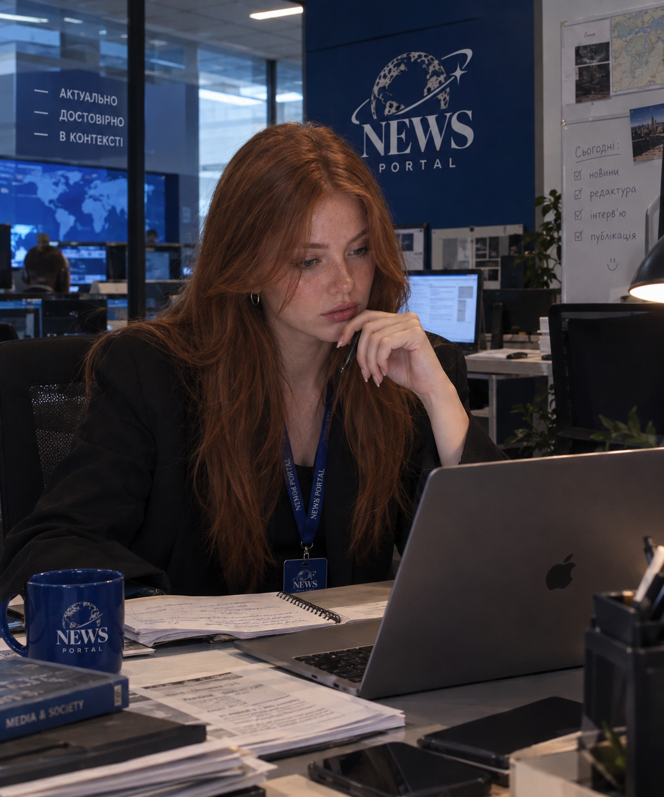

Головний редактор

ПІБ: Diana Schmid
Біографія: Працює в журналістиці понад 10 років.
Очолювала провідні аналітичні видання та спеціалізується на розслідуваннях і культурних оглядах.
Освіта: Вища. Закінчила Навчально-науковий інститут журналістики КНУ ім. Тараса Шевченка.